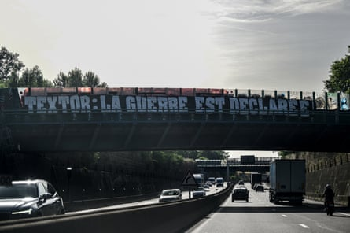

J ust five days ago, John Textor bounded down the corridors of the Rose Bowl in Pasadena. “Victoire, victoire,” he cried as his side, Botafogo, stunned PSG in the Club World Cup . French football’s financial watchdog, the DNCG, brought him back down to earth on Tuesday as it confirmed Lyon’s relegation to Ligue 2.
“Everything is good financially,” said Textor prior to the DNCG meeting. This is not the first time that the Lyon owner has gone into one of these meetings with a sense of confidence swiftly eroded by the commission’s verdict. It was the same back in 2023 and in November last year.
On the former occasion, the club were issued a transfer ban, forcing them to sell off key assets such as Bradley Barcola and Castello Lukeba, without being able to replace them. Textor was indignant, even confused. “Welcome to football in France,” concluded the American in a lengthy communique lambasting the authorities’ decision and their inability to “understand” Eagle Football’s multi-club model; a recurring theme in this ongoing drama.
Textor was generous in his serving of blame. There was a bit for everyone, including former owner and president Jean-Michel Aulas. “He hid bad news. I could have found a solution if I was aware. If I knew that we would have had these restrictions in the first transfer window, I would have asked to stop the transaction and restructure rather than giving half a billion dollars in cash to the sellers,” said Textor.
Aulas hit back, even threatening a court case. “I was never troubled by the DNCG. I never had any problem with them in 35 years as president,” he retorted. The Frenchman, almost as big as the institution of Lyon itself given their success under his tenure, has publicly stated that he did not wish to sell to Textor. He preferred another candidate but a deal could not be reached.
Upon his arrival, Textor inherited a club in debt. Lyon had fallen out of the Champions League but their significant wage bill did not reflect their new standing, even less so when academy products Alexandre Lacazette and Corentin Tolisso returned on “free” transfers but with considerable salaries in 2022.
But Textor has done little to correct Lyon’s course. Assets have been stripped: OL Féminin, OL Reign and the LDLC Arena, which houses Lyon’s basketball team, were all sold. There are fears that Lyon’s academy, the lifeblood of the club’s identity, could be next. “If that happens, OL will lose a lot. It is the club’s DNA,” warned Maxence Caqueret, a recent graduate who is now playing for Como. Yet those sacrifices have not sufficed in convincing the DNCG of the club’s financial stability.
The club’s recent transfer dealings play a part. Almost €150m was spent last summer in a bid to return to the Champions League. The most eye-raising investment was in Moussa Niakhaté, who was signed from Nottingham Forest for €32m despite not being a guaranteed starter at the time. Orel Mangala also arrived for more than €20m and that opaque Nottingham Forest connection could have been extended by the arrivals of Danilo and Matt Turner this summer. The pair, who played just 17 games between them last season, were touted to arrive in a deal worth around €30m. Lessons are not being learned.
A banner near Lyon’s stadium reads: ‘Textor: The war is declared!’Photograph: Olivier Chassignole/AFP/Getty Images
In November, Lyon once again met with the DNCG. “The meeting went well, I’m confident in our numbers,” said Textor, who felt he had got to grips with the particularities of French football administration. Yet once again, Lyon were stung, this time not merely with a transfer ban but with a provisional relegation to Ligue 2.
In the months since, on-pitch success has been seen as the remedy for the club’s off-field ills. “The club’s future has been uncertain since the start of the season; that is why, since the beginning, we set ourselves the target of qualifying for the Champions League,” said Niakhaté after a defeat to Monaco in May that put paid to those ambitions. They instead had to settle for the Europa League , again.
Textor went for broke to achieve Champions League football – investing in playing staff and then in Paulo Fonseca after deciding that Pierre Sage could not lead them to the promised land. But those bets did not come in, the Champions League revenue would not usher through the club’s coffers, and the deficit would not be plugged.
Despite that, Textor arrived with confidence. The sale of his shares in Crystal Palace had given a boost, as had the sale of Rayan Cherki to Manchester City for a fee in excess of €40m . But the DNCG would not accept “hypotheticals” and promises of future sales, nor could the club factor in any TV revenue, with Ligue 1 currently without a broadcaster for next season. That applied to all clubs.
Initially blocked at the entrance to the DNCG’s offices, Textor was finally let in and he left – once again – sounding confident. “We feel very comfortable with the DNCG’s processes. We enjoyed the hearing. Our liquidity situation has improved remarkably, but I’ve learned enough about the processes in France that I would never presume anything coming out of the hearing,” said Textor.
He was right not to presume. The verdict fell and an earthquake was felt throughout French football as seven-time champions Lyon were relegated to Ligue 2. “It is a terrible blow,” said Aulas. “Sadness dominates and an immense inability to understand.”
The club’s main ultras group, the Bad Gones, have called on the owner to leave, with “Textor out” banners appearing across the city. “John has never been and never will be the man for the situation. The Botafogo supporter should now leave the Lyon landscape,” read a statement from the group. Much of the blame has fallen on Textor’s shoulders and, while the financial crisis gripping French football can be used as a mitigating factor, it is worth noting that Lyon are the only Ligue 1 side to suffer this fate.
Lyon branded the decision “incomprehensible” and announced that they will appeal. French football’s lower echelons are littered with clubs perceived as too big to fall - Bordeaux and Sochaux, both down in the National divisions are two of the most recent examples. Lyon’s error was believing that such a fate would not – could not – befall them.
“I am one of those that wants to fight PSG but it is very difficult – you have to go step by step,” said Textor last week. Those first steps, if Lyon’s appeal proves unsuccessful, will be taken in Ligue 2, by beating the likes of Nancy, Pau and Rodez next season. Ignorance, hubris and exceptionalism have driven a once great club to the precipice of the abyss.
This is an article by Get French Football News